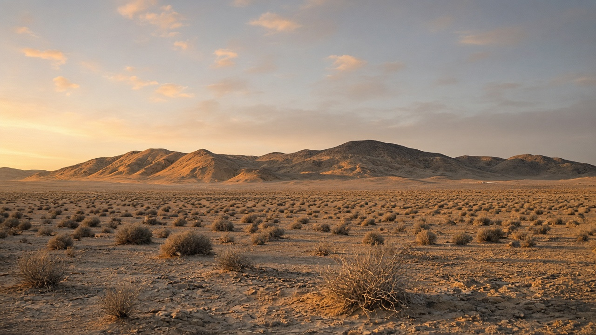
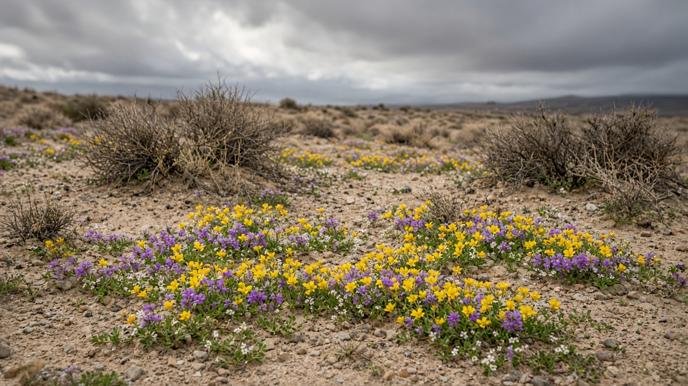
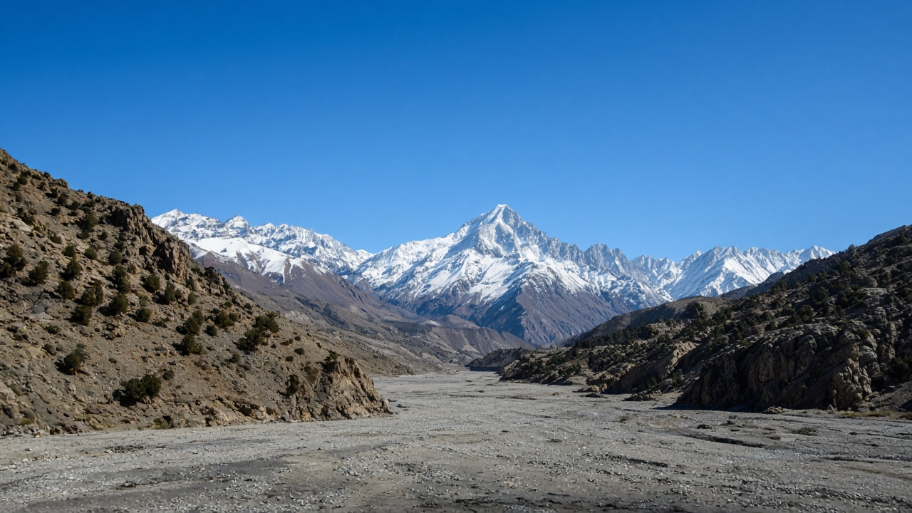

Deserts and Arid Land Ecology
Published on August 20, 2026

Deserts and arid lands are terrestrial ecosystems defined by chronic water shortage, high evaporative demand, and plant cover that is sparse yet highly organized around pulses of rain. Hot deserts, cold deserts, rain-shadow basins, and coastal fog deserts differ in temperature but share soils that crust, salt, or blow if the living skin of lichens, cyanobacteria, and scattered shrubs is broken. Many plants use CAM or C4 photosynthesis, deep or widespread roots, and short life cycles that germinate only after threshold storms. Animals and microbes time activity to night, dew, or the few wet weeks of the year. These landscapes store carbon in soils and woody roots more than in closed canopies, so “empty” drylands are still functioning terrestrial systems, not wasteland awaiting conversion.
Arid ecology is pulse-driven: a single rain can trigger germination, insect hatches, and a brief flush of forage, followed by months of dormancy. Overgrazing, off-road traffic, and poorly designed irrigation destroy biological soil crusts, raise dust, and salinize fields when evaporation concentrates salts. Afforestation with thirsty species can lower water tables and fail in drought years, converting a stable sparse shrubland into a dying plantation. Wind erosion after crust loss travels far, depositing dust on snow and cities downwind. Mapping perennial cover, crust integrity, and groundwater depth therefore tells more about arid-land health than percentage tree cover borrowed from humid-forest metrics.
Stewardship of deserts and drylands starts with protecting the soil surface, matching water use to recharge, and using native drought-adapted plants for any restoration. Water harvesting that spreads small floods onto alluvial fans can revive ephemeral grasslands without dams that drown oases. Grazing rest after rain allows seed set; fencing of crusted patches and dune pioneer plants reduces blowouts. In South Asia’s rain-shadow valleys and inner Himalayan dry belts, including parts of Nepal’s trans-Himalaya, the same rules apply: sparse juniper, Caragana, and alpine desert steppe need soil protection more than dense planting. Teaching arid land as a biome with its own hydrology and carbon stores keeps land-use plans from importing rainforest restoration recipes into places where water, not shade, is the limiting resource.

मरुभूमि र सुख्खा भूमि दीर्घकालीन पानी अभाव, उच्च वाष्पीकरण माग र वर्षाका तरंग वरिपरि व्यवस्थित तर पातलो वनस्पति आवरणले परिभाषित स्थलीय प्रणाली हुन्। तातो मरुभूमि, चिसो मरुभूमि, वर्षा-छाया बेसिन र तटीय कुहिरो मरुभूमि तापक्रममा फरक हुन्छन् तर लिचेन, सायानोब्याक्टेरिया र छरिएका झाडीको जीवित छाल फुटे माटो पपडी, नुन वा उड्ने साझा गर्छन्। धेरै बोट क्याम वा सी-चार प्रकाश संश्लेषण, गहिरो वा फैलिने जरा र सीमा नाघ्ने आँधीपछि मात्र उम्रने छोटो जीवन चक्र प्रयोग गर्छन्। जनावर र सूक्ष्मजीव रात, शीत वा वर्षका थोरै भिजेका सातामा क्रियाकलाप मिलाउँछन्। यी परिदृश्यले बन्द छानोभन्दा माटो र काष्ठ जरामा कार्बन राख्छन्, त्यसैले “रित्तो” सुख्खा भूमि अझै कार्यरत स्थलीय प्रणाली हुन्, रूपान्तरण पर्खने उजाड होइनन्।
सुख्खा पारिस्थितिकी तरंग-चालित हुन्छ: एउटै वर्षाले उम्रन, कीरा निस्कन र घाँसको छोटो लहर चलाउन सक्छ, त्यसपछि महिनौं सुषुप्तता। अति चराइ, सडकबाहिर यातायात र कमजोर सिँचाइले जैविक माटो क्रस्ट बिगार्छ, धुलो बढाउँछ र वाष्पीकरणले नुन केन्द्रित गर्दा खेत नुनिलो बनाउँछ। तिर्खा लाग्ने प्रजातिसँग वृक्षारोपणले पानी तह घट्न सक्छ र खडेरी वर्षमा असफल हुन सक्छ, स्थिर पातलो झाडीलाई मर्दै गरेको वृक्षारोपणमा बदल्छ। क्रस्ट हानिपछि हावा क्षय टाढा पुग्छ, हिउँ र तल्लो शहरमा धुलो थुपार्छ। बहुवर्षीय आवरण, क्रस्ट अखण्डता र भूमिगत पानी गहिराइ नक्सा गर्दा आर्द्र वनबाट सापटी लिइएको रूख प्रतिशतभन्दा सुख्खा भूमि स्वास्थ्य बढी बताउँछ।
मरुभूमि र सुख्खा भूमि हेरचाह माटो सतह जोगाएर, पानी प्रयोग पुनर्भरणसँग मिलाएर र कुनै पुनर्स्थापनामा मूल खडेरी-अनुकूल बोट प्रयोग गरेर सुरु हुन्छ। साना बाढी जलोढ़ फ्यानमा फैलाउने पानी संकलनले मरुद्यान डुबाउने बाँधविना क्षणिक घाँसे मैदान पुनर्जीवित गर्न सक्छ। वर्षापछि चराइ विश्रामले बीउ लाग्न दिन्छ; क्रस्ट भएका प्याच र बालुवा अगुवा बोट घेर्दा उडान घट्छ। दक्षिण एसियाका वर्षा-छाया उपत्यका र भित्री हिमाली सुख्खा पट्टीमा, नेपालका ट्रान्स-हिमालय भागसहित, उही नियम लागू हुन्छन्: पातलो धुपी, कारगाना र अल्पाइन मरु स्टेपलाई बाक्लो रोपणभन्दा माटो सुरक्षा चाहिन्छ। सुख्खा भूमिलाई आफ्नै जलविज्ञान र कार्बन भण्डार भएको बायोम सिकाउँदा भू-प्रयोग योजनाले छायाँ होइन पानी सीमित स्रोत भएका ठाउँमा वर्षावन पुनर्स्थापना नुस्खा आयात गर्नबाट जोगिन्छ।

मरुस्थल और शुष्क भूमि दीर्घकालिक जल अभाव, उच्च वाष्पन माँग और वर्षा तरंगों के इर्द-गिर्द संगठित पर विरल वनस्पति आवरण से परिभाषित स्थलीय तंत्र हैं। गर्म मरुस्थल, ठंडे मरुस्थल, वर्षा-छाया बेसिन और तटीय कुहासा मरुस्थल तापमान में भिन्न हैं पर लाइकेन, सायनोबैक्टीरिया और बिखरी झाड़ियों की जीवित खाल टूटने पर मिट्टी पपड़ी, नमक या उड़ने की साझेदारी करते हैं। कई पौधे कैम या सी-चार प्रकाश संश्लेषण, गहरी या फैली जड़ें और सीमांत तूफ़ान के बाद ही अंकुरित छोटे जीवन चक्र प्रयोग करते हैं। पशु और सूक्ष्मजीव रात, ओस या वर्ष के कुछ गीले सप्ताहों पर क्रिया समय करते हैं। ये परिदृश्य बंद छत्र से अधिक मिट्टी और काष्ठ जड़ों में कार्बन रखते हैं, इसलिए “खाली” शुष्क भूमि अभी भी काम करते स्थलीय तंत्र हैं, रूपांतरण की प्रतीक्षा करते बंजर नहीं।
शुष्क पारिस्थितिकी तरंग-चालित है: एक वर्षा अंकुरण, कीट निकलना और चारे की संक्षिप्त लहर चला सकती है, उसके बाद महीनों सुषुप्तावस्था। अति चरान, सड़क से हटकर यातायात और कमजोर सिंचाई जैविक मृदा पपड़ी तोड़ते, धूल बढ़ाते और वाष्पन नमक केंद्रित करने पर खेत खारे करते हैं। प्यासी प्रजातियों से वनीकरण जल स्तर घटा सकता और सूखे वर्षों में असफल हो सकता है, स्थिर विरल झाड़ी को मरते वृक्षारोपण में बदलता है। पपड़ी हानि के बाद वायु क्षय दूर जाता है, बर्फ़ और नीचे शहरों पर धूल जमा करता है। बहुवर्षीय आवरण, पपड़ी अखंडता और भूजल गहराई नक्शा करना आर्द्र वन से उधार वृक्ष प्रतिशत से अधिक शुष्क भूमि स्वास्थ्य बताता है।
मरुस्थल और शुष्क भूमि प्रबंधन मिट्टी सतह बचाने, जल उपयोग को पुनर्भरण से मिलाने और किसी पुनर्स्थापना में मूल सूखा-अनुकूल पौधों से शुरू होता है। छोटी बाढ़ जलोढ़ पंखों पर फैलाने वाला जल संचयन नखलिस्तान डुबाते बाँधों के बिना क्षणिक घास मैदान पुनर्जीवित कर सकता है। वर्षा के बाद चरान विश्राम बीज लगने देता है; पपड़ीदार पैच और टिब्बा अग्रगामी पौधों की बाड़ उड़ान घटाती है। दक्षिण एशिया की वर्षा-छाया घाटियों और भीतरी हिमाली शुष्क पट्टियों में, नेपाल के ट्रांस-हिमालय भाग सहित, वही नियम लागू होते हैं: विरल देवदार, कारगाना और अल्पाइन मरु स्टेप को घने रोपण से अधिक मिट्टी सुरक्षा चाहिए। शुष्क भूमि को अपनी जलविज्ञान और कार्बन भंडार वाले बायोम के रूप में सिखाने से भू-उपयोग योजनाएँ छाया नहीं जल सीमित संसाधन वाले स्थानों में वर्षावन पुनर्स्थापना नुस्खे आयात करने से बचती हैं।